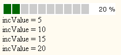

examples
examples$Date$
 Introduction
IntroductionThis example requires :
This example will run a ProgressBar with a custom class observer mechanism. Output could be send to screen or on flat file 'observer_complex.log'.
Here are the contents of that file :
[Top]
 Render options
Render options speed = 50 is set at line 46
increment = 5 is set at line 47
[Top]
 Output
Output
[Top]
 PHP source syntax highlight
PHP source syntax highlight[Top]
 Play demo
Play demoRun the screen version.
Run the file version.
[Top]